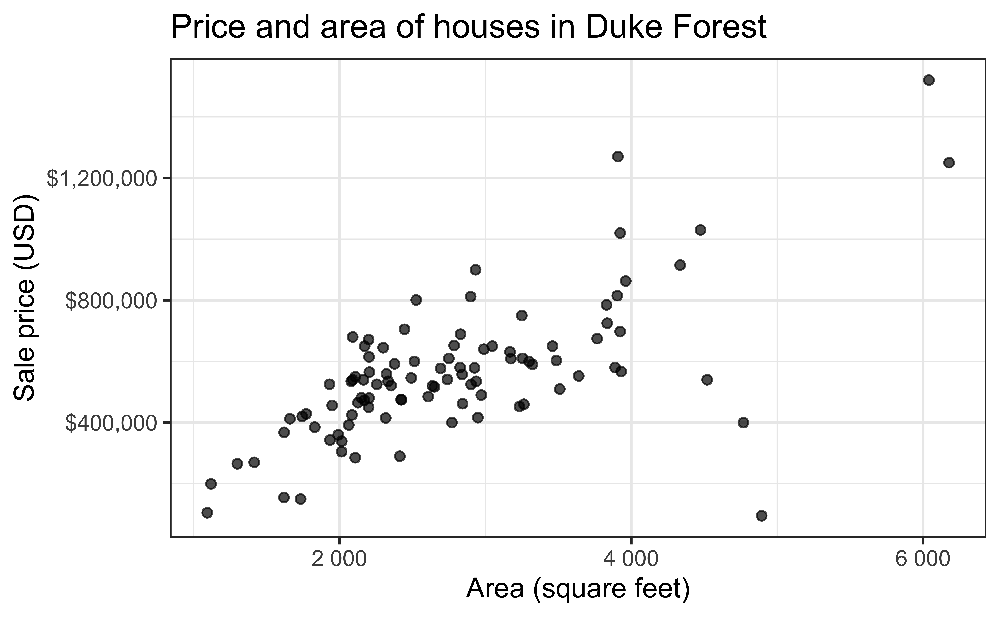
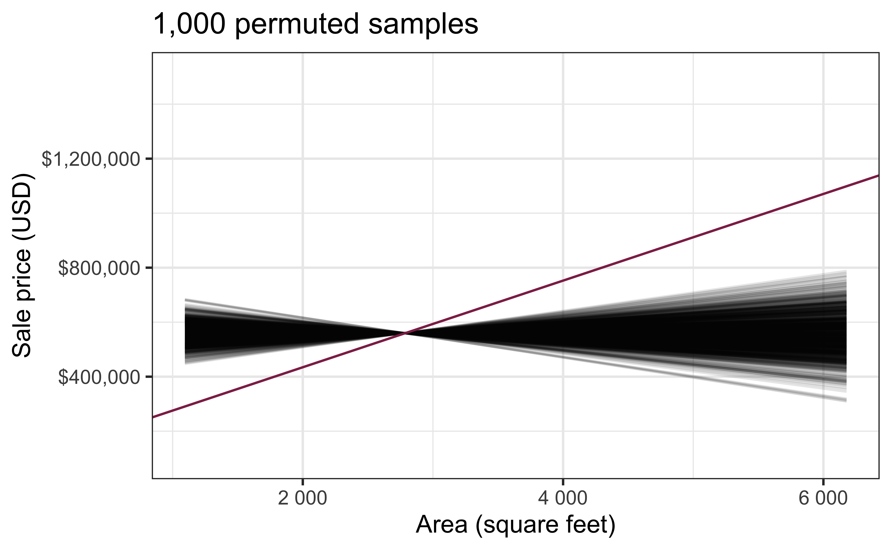
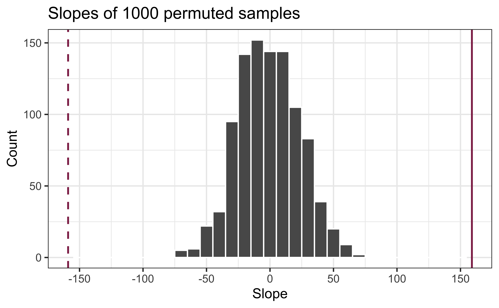
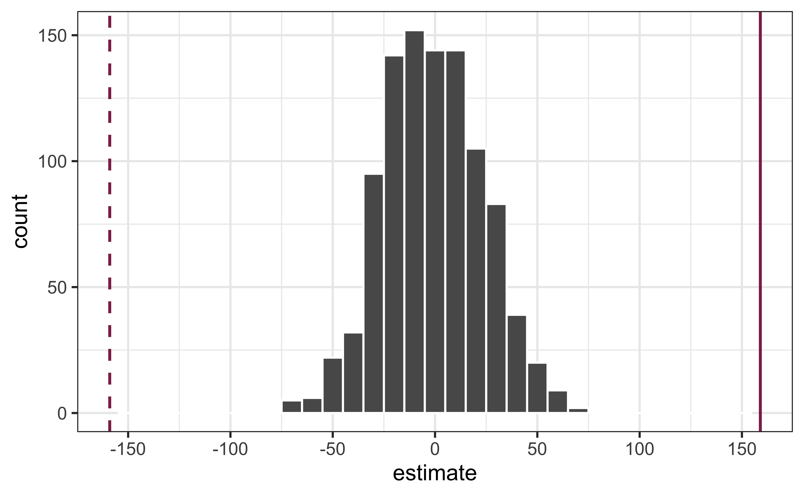

# load packages
library(tidyverse) # for data wrangling and visualization
library(tidymodels) # for modeling
library(usdata) # for the county_2019 dataset
library(openintro) # for Duke Forest dataset
library(scales) # for pretty axis labels
library(glue) # for constructing character strings
library(knitr) # for neatly formatted tables
library(kableExtra) # also for neatly formatted tablesf
# set default theme and larger font size for ggplot2
ggplot2::theme_set(ggplot2::theme_bw(base_size = 16))SLR: Permutation test for the slope
Announcements
HW 01 due Tuesday, January 27 at 11:59pm
Labs resume Monday (stayed tuned for any weather related updates)
Topics
- Describe accuracy versus precision for confidence intervals
Evaluate a claim about the slope using hypothesis testing
Construct a null distribution using simulation
Compute a p-value and use it to draw conclusions
Computational setup
Recap of last lecture
Data: Duke Forest houses

The regression model
df_fit <- lm(price ~ area, data = duke_forest)
tidy(df_fit) |>
kable(digits = 2)| term | estimate | std.error | statistic | p.value |
|---|---|---|---|---|
| (Intercept) | 116652.33 | 53302.46 | 2.19 | 0.03 |
| area | 159.48 | 18.17 | 8.78 | 0.00 |
. . .
Slope: For each additional square foot, we expect the sale price of Duke Forest houses to be higher by $159, on average.
Inference for simple linear regression
Calculate a confidence interval for the slope, \(\beta_1\)
Conduct a hypothesis test for the slope, \(\beta_1\)
Statistical inference

Sampling is natural

- When you taste a spoonful of soup and decide the spoonful you tasted isn’t salty enough, that’s exploratory analysis
- If you generalize and conclude that your entire soup needs salt, that’s an inference
- For your inference to be valid, the spoonful you tasted (the sample) needs to be representative of the entire pot (the population)
Confidence interval via bootstrapping
- Bootstrap new samples from the original sample
- Fit models to each of the samples and estimate the slope
- Use features of the distribution of the bootstrapped slopes to construct a confidence interval
Bootstrapping pipeline I
Response: price (numeric)
Explanatory: area (numeric)
# A tibble: 98 × 2
price area
<dbl> <dbl>
1 1520000 6040
2 1030000 4475
3 420000 1745
4 680000 2091
5 428500 1772
6 456000 1950
7 1270000 3909
8 557450 2841
9 697500 3924
10 650000 2173
# ℹ 88 more rowsBootstrapping pipeline II
Response: price (numeric)
Explanatory: area (numeric)
# A tibble: 98,000 × 3
# Groups: replicate [1,000]
replicate price area
<int> <dbl> <dbl>
1 1 290000 2414
2 1 285000 2108
3 1 265000 1300
4 1 416000 2949
5 1 541000 2740
6 1 525000 2256
7 1 1270000 3909
8 1 265000 1300
9 1 815000 3904
10 1 535000 2937
# ℹ 97,990 more rowsBootstrapping pipeline III
# A tibble: 2,000 × 3
# Groups: replicate [1,000]
replicate term estimate
<int> <chr> <dbl>
1 1 intercept 80699.
2 1 area 168.
3 2 intercept -18821.
4 2 area 205.
5 3 intercept 234297.
6 3 area 117.
7 4 intercept 134481.
8 4 area 150.
9 5 intercept 23861.
10 5 area 190.
# ℹ 1,990 more rowsBootstrapping pipeline IV
Visualize the bootstrap distribution

Compute the CI

But first…
obs_fit <- duke_forest |>
specify(price ~ area) |>
fit()
obs_fit# A tibble: 2 × 2
term estimate
<chr> <dbl>
1 intercept 116652.
2 area 159.Compute 95% confidence interval
boot_dist |>
get_confidence_interval(
point_estimate = obs_fit,
level = 0.95,
type = "percentile"
)# A tibble: 2 × 3
term lower_ci upper_ci
<chr> <dbl> <dbl>
1 area 91.7 211.
2 intercept -18290. 287711.Precision vs. accuracy
If we want to be very certain that we capture the population parameter, should we use a wider or a narrower interval? What drawbacks are associated with using a wider interval?
. . .

Precision vs. accuracy
How can we get best of both worlds – high precision and high accuracy?
. . .
Consider a 90%, 95%, and 99% confidence interval.
- Which interval is most precise?
- Which is most accurate?
Changing confidence level
## confidence level: 90%
get_confidence_interval(
boot_fits, point_estimate = obs_fit,
level = 0.90, type = "percentile"
) # A tibble: 2 × 3
term lower_ci upper_ci
<chr> <dbl> <dbl>
1 area 102. 206.
2 intercept 5288. 264931.## confidence level: 99%
get_confidence_interval(
boot_fits, point_estimate = obs_fit,
level = 0.99, type = "percentile"
)# A tibble: 2 × 3
term lower_ci upper_ci
<chr> <dbl> <dbl>
1 area 65.4 229.
2 intercept -47594. 362644.Hypothesis test for the slope
Research question and hypotheses
“Do the data provide sufficient evidence that \(\beta_1\) (the true slope for the population) is different from 0?”
. . .
Null hypothesis: there is no linear relationship between area and price
\[ H_0: \beta_1 = 0 \]
. . .
Alternative hypothesis: there is a linear relationship between area and price
\[ H_a: \beta_1 \ne 0 \]
Hypothesis testing as a US court trial
- Null hypothesis, \(H_0\): Defendant is innocent
- Alternative hypothesis, \(H_a\): Defendant is guilty
- Present the evidence: Collect data
- Judge the evidence: “Could these data plausibly have happened by chance if the null hypothesis were true?”
Yes: Fail to reject \(H_0\)
No: Reject \(H_0\)
Hypothesis testing framework
- Start with a null hypothesis, \(H_0\) that represents the status quo
- Set an alternative hypothesis, \(H_a\) that represents the research question, i.e. claim we’re testing
- Conduct a hypothesis test under the assumption that the null hypothesis is true and calculate a p-value (probability of getting the observed or a more extreme outcome given that the null hypothesis is true)
- if the test results suggest that the data do not provide convincing evidence for the alternative hypothesis, stick with the null hypothesis
- if they do, then reject the null hypothesis in favor of the alternative
Quantify the variability of the slope
for testing
- Two approaches:
- Via simulation
- Via mathematical models
- Use Permutation to quantify the variability of the slope for the purpose of testing, under the assumption that the null hypothesis is true:
- Simulate new samples from the original sample via permutation
- Fit models to each of the samples and estimate the slope
- Use features of the distribution of the permuted slopes to conduct a hypothesis test
Permutation, described
- Use permuting to simulate data under the assumption the null hypothesis is true and measure the natural variability in the data due to sampling, not due to variables being correlated
- Permute one variable to eliminate any existing relationship between the variables
- Each
pricevalue is randomly assigned to theareaof a given house, i.e.areaandpriceare no longer matched for a given house
# A tibble: 98 × 3
price_Observed price_Permuted area
<dbl> <dbl> <dbl>
1 1520000 342500 6040
2 1030000 750000 4475
3 420000 645000 1745
4 680000 697500 2091
5 428500 428500 1772
6 456000 481000 1950
7 1270000 610000 3909
8 557450 680000 2841
9 697500 485000 3924
10 650000 105000 2173
# ℹ 88 more rowsPermutation, visualized
- Each of the observed values for
area(and forprice) exist in both the observed data plot as well as the permutedpriceplot - The permutation removes the relationship between
areaandprice

Permutation, repeated
Repeated permutations allow for quantifying the variability in the slope under the condition that there is no linear relationship (i.e., that the null hypothesis is true)

Concluding the hypothesis test
Is the observed slope of \(\hat{\beta_1} = 159\) (or an even more extreme slope) a likely outcome under the null hypothesis that \(\beta = 0\)? What does this mean for our original question: “Do the data provide sufficient evidence that \(\beta_1\) (the true slope for the population) is different from 0?”

Permutation pipeline I
Response: price (numeric)
Explanatory: area (numeric)
# A tibble: 98 × 2
price area
<dbl> <dbl>
1 1520000 6040
2 1030000 4475
3 420000 1745
4 680000 2091
5 428500 1772
6 456000 1950
7 1270000 3909
8 557450 2841
9 697500 3924
10 650000 2173
# ℹ 88 more rowsPermutation pipeline II
Response: price (numeric)
Explanatory: area (numeric)
Null Hypothesis: indepe...
# A tibble: 98 × 2
price area
<dbl> <dbl>
1 1520000 6040
2 1030000 4475
3 420000 1745
4 680000 2091
5 428500 1772
6 456000 1950
7 1270000 3909
8 557450 2841
9 697500 3924
10 650000 2173
# ℹ 88 more rowsPermutation pipeline III
Response: price (numeric)
Explanatory: area (numeric)
Null Hypothesis: indepe...
# A tibble: 98,000 × 3
# Groups: replicate [1,000]
price area replicate
<dbl> <dbl> <int>
1 290000 6040 1
2 285000 4475 1
3 265000 1745 1
4 416000 2091 1
5 541000 1772 1
6 525000 1950 1
7 1270000 3909 1
8 490000 2841 1
9 535000 3924 1
10 481000 2173 1
# ℹ 97,990 more rowsPermutation pipeline IV
# A tibble: 2,000 × 3
# Groups: replicate [1,000]
replicate term estimate
<int> <chr> <dbl>
1 1 intercept 560741.
2 1 area -0.303
3 2 intercept 531330.
4 2 area 10.3
5 3 intercept 533014.
6 3 area 9.67
7 4 intercept 388765.
8 4 area 61.6
9 5 intercept 607389.
10 5 area -17.1
# ℹ 1,990 more rowsPermutation pipeline V
Visualize the null distribution
Reason around the p-value
In a world where the there is no relationship between the area of a Duke Forest house and in its price (\(\beta_1 = 0\)), what is the probability that we observe a sample of 98 houses where the slope fo the model predicting price from area is 159 or even more extreme?

Compute the p-value
What does this warning mean?
get_p_value(
null_dist,
obs_stat = obs_fit,
direction = "two-sided"
)Warning: Please be cautious in reporting a p-value of 0. This result is an approximation
based on the number of `reps` chosen in the `generate()` step.
ℹ See `get_p_value()` (`?infer::get_p_value()`) for more information.
Please be cautious in reporting a p-value of 0. This result is an approximation
based on the number of `reps` chosen in the `generate()` step.
ℹ See `get_p_value()` (`?infer::get_p_value()`) for more information.# A tibble: 2 × 2
term p_value
<chr> <dbl>
1 area 0
2 intercept 0p-value warning
What does the warning from R mean?
Application exercise
Recap
Described accuracy versus precision for confidence intervals
Evaluated a claim about the slope using hypothesis testing
Constructed a null distribution using simulation
Computed a p-value and use it to draw conclusions
For next class
Inference using mathematical models
Complete Lecture 06 prepare